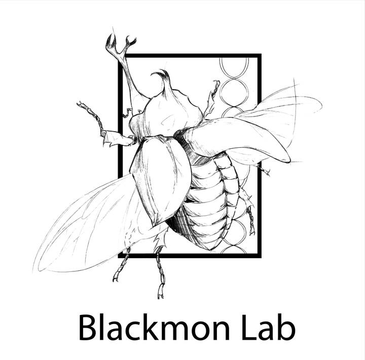

Evolution · Genomes · Biodiversity
How does evolution shape the genome?
We study chromosomes, genetic interactions, and adaptation across the tree of life. At Texas A&M, we bring comparative data, evolutionary theory, and hands-on student research together to understand biological diversity.